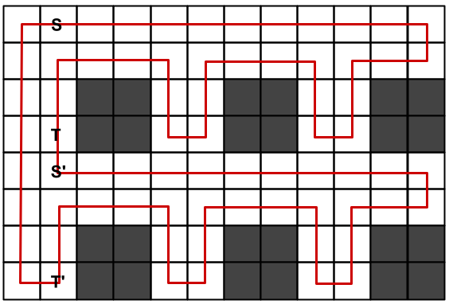
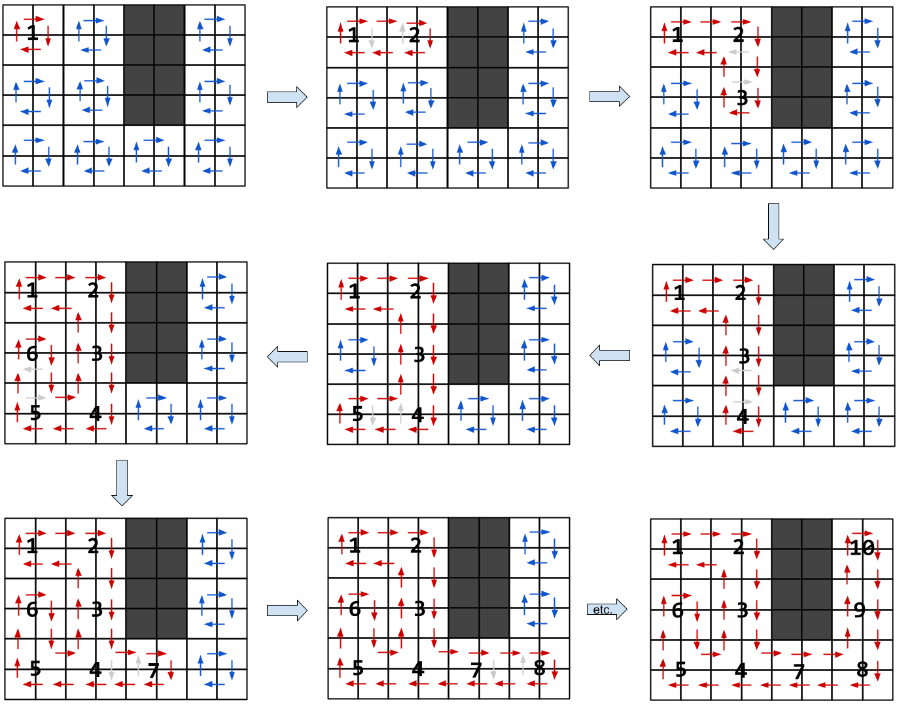
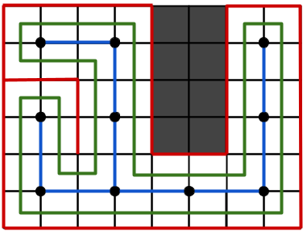

Kick Start 2022 - Round B
Analysis: Hamiltonian Tour
Test Set 1
The regular structure of the grid allows for many simple constructions of a Hamiltonian cycle by using repeated patterns as building blocks. For example, if both $$$\mathbf{R}$$$ and $$$\mathbf{C}$$$ are even, we can define $$$P=E^{2\mathbf{C}-2}S(W^2S^2WN^2W)^\frac{\mathbf{C}-2}{2}W^2S^2$$$ and use $$$E(PS)^{\frac{\mathbf{R}}{2}-1}PWN^{2\mathbf{R}-1}$$$ as our Hamiltonian cycle. This is illustrated in the picture below, where the same pattern $$$P$$$ is used to walk between cells $$$S$$$ and $$$T$$$ or cells $$$S'$$$ and $$$T'$$$.
Similar patterns can be defined when one or both of $$$\mathbf{R}$$$ and $$$\mathbf{C}$$$ are odd. For example:
- If $$$\mathbf{R}$$$ is even and $$$\mathbf{C}$$$ is odd, use the cycle $$$E(PS)^{\frac{\mathbf{R}}{2}-1}PWN^{2\mathbf{R}-1}$$$, where $$$P=E^{2\mathbf{C}-2}S(S^2WN^2W^3)^\frac{\mathbf{C}-1}{2}S^2$$$.
- If $$$\mathbf{R}$$$ is odd and $$$\mathbf{C}$$$ is even, use the cycle $$$EP^\frac{\mathbf{R}-1}{2}E^{2\mathbf{C}-2}SW^{2\mathbf{C}-1}N^{2\mathbf{R}-1}$$$, where $$$P=E^{2\mathbf{C}-2}S(W^2S^2WN^2W)^\frac{\mathbf{C}-2}{2}W^2S^3$$$.
- If both $$$\mathbf{R}$$$ and $$$\mathbf{C}$$$ are odd, use the cycle $$$EP^\frac{\mathbf{R}-1}{2}E^{2\mathbf{C}-2}SW^{2\mathbf{C}-1}N^{2\mathbf{R}-1}$$$, where $$$P=E^{2\mathbf{C}-2}S(S^2WN^2W^3)^\frac{\mathbf{C}-1}{2}S^3$$$.
The time complexity of this construction is proportional to the length of the resulting cycle, which is $$$O(\mathbf{R}\mathbf{C})$$$.
Test Set 2
We are going to discuss two different approaches here. In both of them, we will use an undirected
graph $$$G$$$ with the empty $$$2 \times 2$$$ blocks as nodes and two blocks connected by an edge
if and only if the blocks share a side. If the graph is disconnected, then the answer is
IMPOSSIBLE, as there are empty cells that are not even reachable from the cell
$$$A_{1,1}$$$. We will see that a Hamiltonian cycle exists if $$$G$$$ is connected.
Merging Cycles
The idea in this approach is to perform a depth-first search (DFS) on the graph $$$G$$$, starting at the top-left block, and maintain a cycle traversing all four empty cells of every visited $$$2 \times 2$$$ block. The cycle is extended incrementally as more blocks are visited by the DFS. A detailed description follows.
First, let us connect the four cells of each empty $$$2 \times 2$$$ block in a clockwise cycle of
length four. Technically, it can be implemented by maintaining
pointers next[i,j], where next[i,j]=={p,q} if the cell $$$A_{p,q}$$$
follows the cell $$$A_{i,j}$$$ in a cycle.
The following picture shows the construction for the third example test case.

Now perform a DFS on $$$G$$$ starting at the
top-left block. During the search, we maintain a single cycle containing all four cells of all
empty blocks that are visited by the DFS so far. Let us call it the main cycle, which
is initially the small $$$4$$$-cycle of the top-left block. As we visit a new block $$$X$$$ from
its parent block $$$P$$$ in the DFS tree, we merge the $$$4$$$-cycle of $$$X$$$ into the main
cycle at the common side between blocks $$$P$$$ and $$$X$$$. The merging operation can be
implemented in constant time by reconnecting two pointers. For example, if $$$X$$$ has
$$$A_{i,j}$$$
as its top-left cell and $$$X$$$ is on the right of $$$P$$$, then the cycles can be merged by
setting next[i][j-1]={i,j} and next[i+1][j]={i+1,j-1}.
The following picture illustrates the merging operations for our example.
Since cycles can be merged in constant time and DFS is a linear time algorithm, the overall time complexity of this approach is $$$O(\mathbf{R}\mathbf{C})$$$.
Following the Walls
If you are familiar with the Wall follower algorithm for escaping a maze, the same intuition can be applied directly to construct the Hamiltonian tour in our grid. The idea is to keep walking while sliding one hand along the wall without ever loosing contact with the wall. In the context of a maze, you would either exit the maze eventually or return to the starting position. Similarly, if we were to use the wall follower algorithm in our grid of Hamilton starting at the top-left cell $$$A_{1,1}$$$, we would eventually return to that cell and thus form a cycle.
If $$$G$$$ is a tree, then every empty cell is touching a wall at least at a corner. Therefore, the wall follower algorithm would necessarily visit every empty cell and result in a Hamiltonian cycle.
But what if $$$G$$$ is not a tree? We can construct a spanning tree $$$T$$$ of $$$G$$$ and introduce thin walls between $$$2 \times 2$$$ blocks that are connected in $$$G$$$, but not in the tree $$$T$$$. And again, using the wall follower algorithm would yield a Hamiltonian cycle.
This whole construction is illustrated in the following picture. The spanning tree $$$T$$$ of $$$G$$$ is marked with blue lines, the wall being followed is outlined in red, and the green cycle is the resulting Hamiltonian tour.
The time complexity of both the spanning tree construction and the wall follower algorithm is $$$O(\mathbf{R}\mathbf{C})$$$.